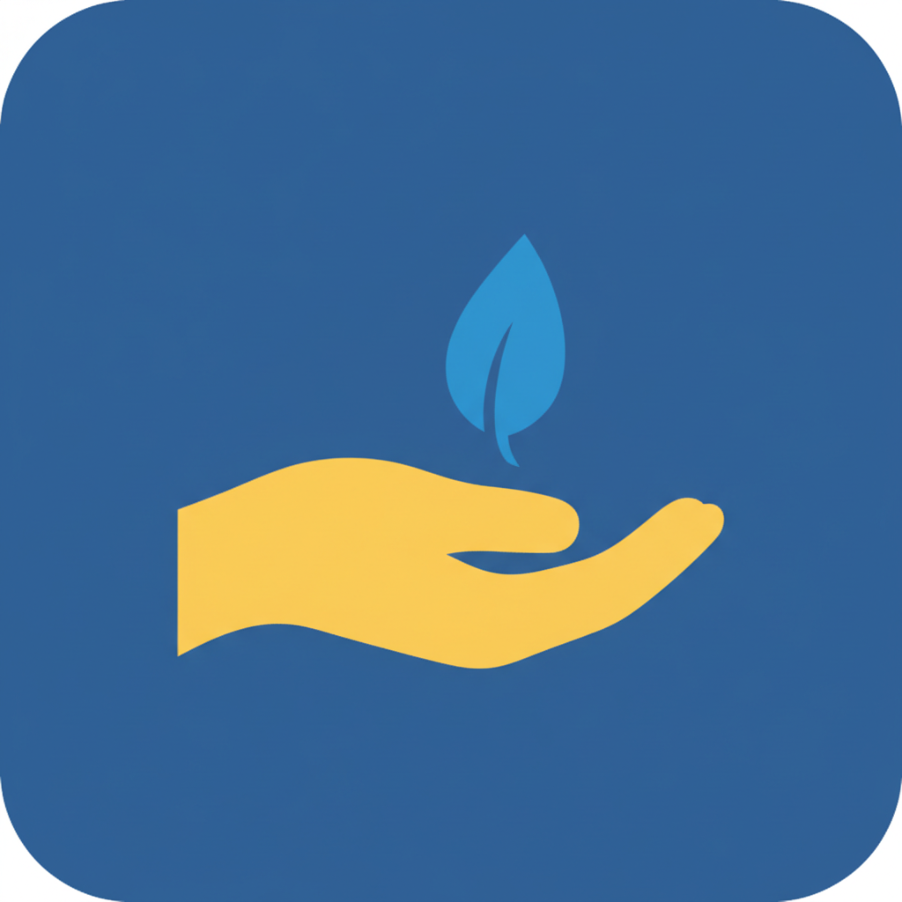

Créée en 1871, l’association Aurore accueille et accompagne vers l’autonomie des personnes en situation de précarité ou d'exclusion via l’hébergement, les soins, l’insertion sociale et professionnelle. Chaque année, l’association accompagne plusieurs milliers de personnes. Reconnue d’utilité publique depuis 1875, Aurore s’appuie sur son expérience pour proposer et expérimenter des formes innovantes de prises en charge, qui s’adaptent à l’évolution des phénomènes de précarité et d'exclusion.